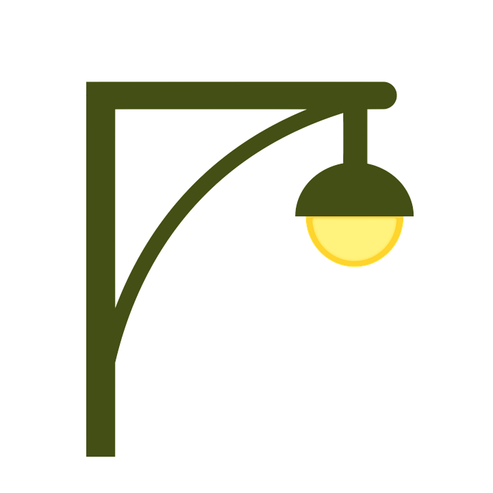

<aside class="main-sidebar">
   	<!-- sidebar: style can be found in sidebar.less -->
    <section class="sidebar">
      <!-- Sidebar user panel -->
      <div class="user-panel" id="myDiv">
        <div class="pull-left image">
          
        </div>
      </div>
      <div>teste</div>
		<ul class="sidebar-menu" data-widget="tree">
	        <li class="treeview">
	          <a id="registerPlaceLink" class="cursorPointer">
	            <i class="fa fa-dashboard"></i> <span>Cadastrar Local</span>
	          </a>   
	          <a id="listPlaceLink" class="cursorPointer">
	            <i class="fa fa-dashboard"></i> <span>Listar Locais</span>
	          </a>
	          <a id="listElectricalDataLink" class="cursorPointer">
	            <i class="fa fa-dashboard cursorPointer"></i> <span>Listar Dados Elétricos</span>
	          </a>          
	          <a id="graphicsElectricalDataLink" class="cursorPointer">
	            <i class="fa fa-dashboard"></i> <span>Gráficos Elétricos</span>
	          </a>    
	          <a id="uploadElectricalDataLink" class="cursorPointer">
	            <i class="fa fa-dashboard"></i> <span>Enviar Dados Elétricos</span>
	          </a>  	                
	        </li>
		</ul>
    </section>
</aside>